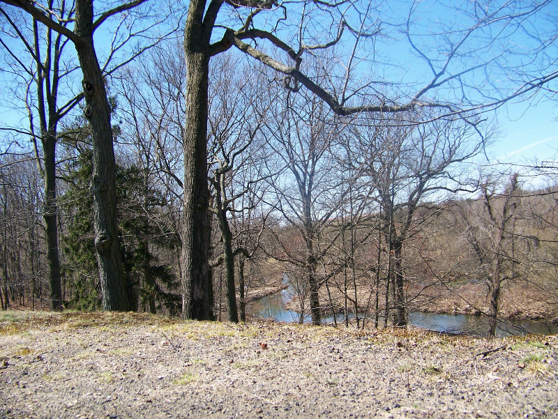
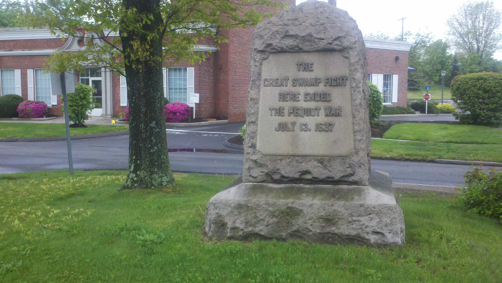
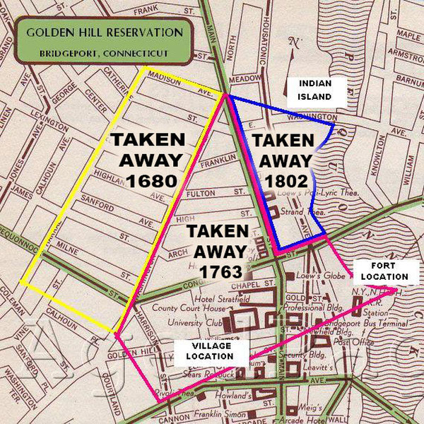
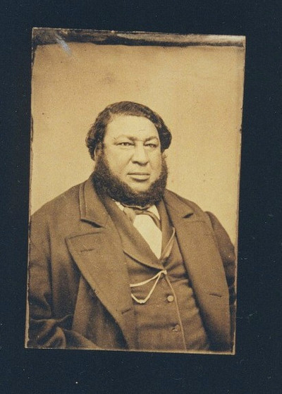
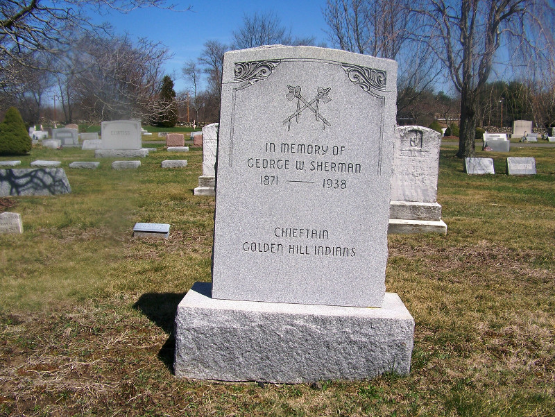

Golden Hill Indians History Timeline
The
Golden Hill Paugussett Indians (a state-recognized tribe in
Connecticut) since the arrival of European colonist settlers.
1600
- 1633
- The First English arrive in Connecticut, establishing settlements in Windsor, Wethersfield
and Harford. Estimated native American population: 12,000 to 20,000.

- 1637
- A force of English and Indian allies attack the powerful Pequots in Mystic. Hundreds
of members of the tribe are killed; survivors flee west. The Pequots took Paugussetts
into a swamp in Southport during the Great Swamp Fight. The Paugussetts were unwilling
hostages, not "allies" as the English alleged in order to help themselves to "conquered
land."

- 1639
- Towns of Stratford and Fairfield established on Paugussett lands by English Puritans.
- 1644
- Black Rock and the West End of Bridgeport are settled as 'Stratfield' by Puritans
from Concord, Massachusetts.
- 1645
- Governor Kieft of New Netherlands wages war on the Siwanoy tribe, aided and abetted
by 150 mercenary troops from the Connecticut colony under the leadership of Capt.
John Underhill. This war culminates with the destruction of the Siwanoy fort at the
village of Petuquapaens, located near Stamford, Connecticut, with a the massacre of
500 to 700 Indians.
- 1650
- 1650's: records are "lost". The first volume of land records of both Stratford and
Fairfield 'mysteriously' disappear, leaving future generations unable to ascertain
how legal title to the lands in both communities was obtained from the Indians. The
'official' statement was that it was all 'conquered' land due to the Paugussetts'
so-called alliance with the Pequots.
- 1659
- The Golden Hill reservation was originally 160 acres. When Washington Ave was built,
it cut through tribal lands. Reservation lands were also laid out at the Great Planting
Field (now Mountain Grove Cemetery) and Wolf Pit Neck (present Seaside Park).
- 1659
- The General Court of the Connecticut Colony lays out 160 acres to create the Golden
Hill Reservation in the center of Bridgeport, oldest extant reservation in America.
Reservation lands were also laid out at the Great Planting Field (now Mountain Grove
Cemetery) and Wolf Pit Neck (present Seaside Park).
- 1675
- King Philip's War weakens New England Indian tribes permanently Important to add that
the Paugussetts did not join the uprising and fight against their English neighbors.
- 1680
- Construction of Washington Avenue cuts through the Golden Hill reservation, while
the Indian land size was reduced down to 80 acres (from 160 acres). At the time, the
reservation contained 100 wigwams, each home to two extended families.

- 1681
- Great Planting Field and Wolf Pit Neck reservations are sold off by the Town of Fairfield
in the aftermath of King Phillip's War. Refugees are relocated onto the already-overtaxed
Golden Hill reservation.
1700
- 1710
- Golden Hill reservation is reduced down to 25 wigwams as Indians flee famine conditions
and population pressures from the expanding English settlements.
- 1730
- Indian Gideon Mauwee establishes a permanent settlement at a prime hunting and fishing
place on the Housatonic River in Kent, inviting displaced Indians from all over Connecticut
to join him. It is the nucleus of the Schaghticoke tribe.
- 1763
- Golden Hill Indians file protest with the Connecticut General Court that whites had
taken over 7/8 of their reservation lands, pastured their hogs and cattle in the cornfields
the Paugussetts needed for sustenance, and pulled down the wigwams they needed for
shelter.
- 1765
- The General Court absolves the white squatters, reducing the reservation down to its
last 12 acres. The Indians are 'compensated' with an eight-acre rock-strewn woodlot
three miles distant at a place that would become known as 'Chopsey Hill' after John
Chops, its Paugussett inhabitant.
After complaints of European settler encroachment on indian land, the General Assembly
gives the Golden Hill 20 abutting acres now known as the Nimrod Lot and the Rocky
Hill Lot. Golden Hill remained the seat of the chief of the tribe, Tom Sherman, and
his clan, who were regarded as the keepers of this sacred place.
- 1776
- The Revolutionary War begins. Tom Sherman joins an Indian brigade and fights zealously
for the Patriot cause.
- 1790
- The First congress of the United States passes the Indian Trade and Non-Intercourse
Act, requiring that Congress approve any sale of Indian land.
1800
- 1802
- The Connecticut General Assembly permits the sale of the Nimrod and Rocky Hill lots,
with the proceeds put in trust for the Golden Hill tribe. Tribal land in other towns
is sold, or purchased and re-sold.
- 1821
- Settlement begins of an Indian village on the shores of Bridgeport Harbor a mile to
the south of the town center.
- 1825
- William Sherman, pivotal chieftain of the Paugussett tribe, is born, probably at a
woodland camp in the town of Monroe. He becomes first mate on whaling ships and ventures
around the world eight times.

- 1828
- Turkey Hill Paugussett Joel Freeman moves from Derby to the Bridgeport Indian settlement
and becomes its leader for the next 37 years.
- 1829
- Nanticoke Indian John Johnson moves from Maryland, marries a Paugussett woman, and
constructs a home next to Joel Freeman. The Nanticokes are culturally and linguistically
closely aligned with the Paugussett tribe.
- 1835
- Joel Freeman establishes Zion Church in the South End settlement of Bridgeport.
- 1841
- The State of Connecticut authorizes funds for an Indian school in the South End community
on the petition of Joel Freeman (sold 14 years later).
- 1841
- A tribal overseer buys 20 acres in the town of Trumbull for the tribe and sold 14
years later.
- 1846
- Free lending library is established for residents of the South End Indian community.
- 1853
- A major resort hotel is constructed at the center of the South End village, financed
by Indian Minot Munson of White Plains, NY.
- 1854
- The entire 20 acres of Trumbull indian reservation was sold by the overseer. William
Sherman purchased a quarter-acre across the road 21 years later.
- 1857
- William Sherman returns from his whaling voyages and settles in the South End community.
After marrying a Pequot wife from New London, he joins his Indian relatives in the
rural village of Nichols, located eight miles away in the town of Trumbull.
- 1861
- Civil War. Indians from the South End settlement enlist together and fight valiantly
in many of the major battles. Several die in action.
- 1886
- Rev. Samuel Orcutt completes his History of the Old Town of Stratford and the City
of Bridgeport. It gives a major biography of William Sherman and adds a detailed
tribal history.
- 1886
- William Sherman deeds his home and lot over to the tribal overseer in perpetuity as
a permanent land base for the Golden Hill tribe. He dies a few short months later.
- 1893
- Ethel Sherman, the daughter of a Paugussett and a Pequot, is born. She will marry
four times and become Rising Star, clan mother of the Golden Hill tribe.
1900
- 1916
- Aurelius H. Piper, the only son of Ethel Sherman, is born. His father is a Cherokee,
according to a genealogy. Piper gradually assumes leadership of the tribe and becomes
known as Chief Big Eagle.
- 1933
- Ethel Sherman installed as 'Princess Rising Star' in elaborate ceremonies at the reservation.
It is attended by noted Indian activists from across America.
- 1935
- State Parks and Forestry Commission assumes oversight of Connecticut's four recognized
Indian tribes.
- 1938
- George Sherman, chief of the Golden Hill tribe following the death of his father William,
dies. He is succeeded by his son Edward, 'Chief Black Hawk'.

- 1940
- Most of South End Paugussett community is bulldozed to make way for Marina Apartments
- 1941
- 1941--Commissioner of Welfare of the State of Connecticut assumes oversight of Indian
tribes from Parks and Forestry Commission.
- 1945
- Aurelius H. Piper Jr. is born to Big Eagle's second wife. After a career as a social
worker, he will assume leadership of the tribe as Chief Quiet Hawk
- 1959
- Aurelius Piper elevated to 'Chief Big Eagle.'
- 1974
- Chief Black Hawk dies; his leadership role is assumed by Chief Big Eagle.
- 1974
- Chief Big Eagle named to Connecticut Indian Affairs Council.
- 1976
- State of Connecticut demolishes William Sherman's century-old home to be replaced
with a new log cabin.
- 1978
- Tribe awarded grant to purchase 108 acres of land in Colchester for second reservation.
- 1982
- Tribe files petition with U.S. Department of Interior seeking Federal recognition.
- 1985
- Claude Clayton Smith authors "Quarter Acre of Heartache", delineating the struggles
of Chief Big Eagle.
- 1991
- Chief Big Eagle becomes traditional chief; his son Chief Quiet Hawk assumes his active
leadership role.
- 1992
- Chief Quiet Hawk files land claims for 12-acre Nimrod Lot and 8-acre Rocky Hill lot
in Bridgeport and 19 3/4 Turkey Meadows reservation in Trumbull, taken from the tribe
in violation of the Indian Non-Intercourse Act of 1790.
- 1992
- Franz Wojciechowski publishes his Ethnohistory of the Golden Hill Paugussett Tribes,
a major anthropological study.
- 1998
- Homes of Mary and Eliza Freeman, sisters of Joel Freeman, are enrolled in the National
Register of Historic Places. Built in 1848, they are the last structures to survive
of the historic South End community.
- 2007
- Charles Brilvitch writes "The History of the Golden Hill Paugussett Tribe", which
fills in the missing gaps of 19th and 20th century history.
This is a Bridgeport Digital
Humanities project.
Home